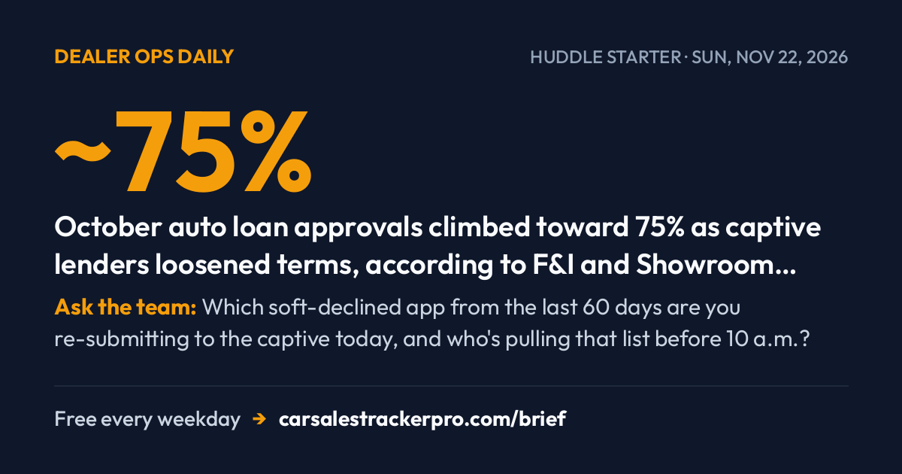

Margins Fell, Approvals Rose: The Week's Split Screen


Public-group profits and blue sky values both dropped hard this week, while lenders quietly got easier to work with. The pattern that emerged underneath: the money that used to live in the front-end deal is drifting toward the service drive, and the floors that notice first will be the ones still getting paid in 2027.
☕ HUDDLE STARTER · read it aloud in 60 seconds
~75% — October auto loan approvals climbed toward 75% as captive lenders loosened terms, according to F&I and Showroom (Nov. 16) — meanwhile public-group profits fell 14.9% year over year per the Haig Report via Digital Dealer. Less room up top, more paper getting bought: the win this week is resurrecting deals we already walked away from.
Ask the team: Which soft-declined app from the last 60 days are you re-submitting to the captive today, and who's pulling that list before 10 a.m.?
• Top-Stories
Blue Sky Values Drop 10.4% As Dealer Profits Slide
Average blue sky value for publicly owned dealerships fell 10.4% to $17 million in the third quarter, with store profits down 14.9% year over year as new, used and F&I margins all tightened, according to Haig Partners' Q3 2026 Haig Report cited by Digital Dealer (Nov. 16). Haig still raised valuation multiples for Lexus, Mercedes-Benz, BMW and Toyota, so this is compression, not collapse. Read in order, almost every other story this week sat downstream of that one number — tighter auction buying, looser lenders, and a sudden interest in fixed ops all rhyme with a front end that has less room in it.
Use it today: Why it matters: when ownership has less margin above you, the desk has less room to move below you — know your four-square cold before you sit down.
Sources: Digital Dealer / Dealer Magazine
The Next Profit Fight Isn't on the Lot — It's in the Service Drive
Steve Greenfield of Automotive Ventures told CBT News at Used Car Week that fixed ops, not vehicle sales, will define dealership profitability heading into 2027 as new-vehicle margins compress (Nov. 19). The same week handed the service drive its own traffic: NHTSA issued an urgent "park outside" recall covering roughly 721,000 BMWs (Nov. 16), and Toyota recalled about 62,000 Tundras per its own newsroom (Nov. 13). Cox Automotive also shipped a rebuilt Xtime consumer scheduler built around clearer upfront pricing, according to AutoSuccess (Nov. 19) — vendors tend to invest where the money is going.
Use it today: Why it matters: recall owners are appointments you didn't have to buy, and the salesperson who walks one back to service is building the relationship that sells the next car.
Sources: CBT News · Toyota USA Newsroom · AutoSuccess
Lenders Got Easier While Everything Else Got Harder
Approval rates climbed toward 75% in October as captive lenders loosened terms and absorbed a bigger share of riskier paper, according to F&I and Showroom (Nov. 16). New York Fed researchers separately told Wards Auto that part of the climb in delinquencies is a "pandemic echo" — stimulus-era accounts with inflated scores aging out of the data — and expect the trend to ease as they clear (Nov. 17). Affordability still worsened month over month, though it remains better than a year ago, per F&I and Showroom (Nov. 18).
Use it today: Why it matters: the deals you soft-declined in September may fund today — reshop them through the captive before you write them off.
Sources: F&I and Showroom (FI Magazine) · Wards Auto / Automotive Dive · F&I and Showroom (FI Magazine)
• Data-Recap
The week in numbers
10.4% / $17 million — the Q3 drop in average blue sky value for public dealerships, per the Haig Report via Digital Dealer (Nov. 16). Store valuations are being marked down while you're still being asked to hold gross.
-14.9% — year-over-year decline in dealership profits, same report. Every margin line moved the same direction at once, which is why the desk feels tighter than the traffic count suggests.
~75% — October auto loan approval rate, according to F&I and Showroom (Nov. 16). This is the single most actionable number of the week: paper is moving.
2.19 million — used-vehicle inventory in October, down 0.9% from September and up 0.1% year over year, per CBT News (Nov. 16). A tighter lot is a reason to defend price, not discount it.
721,000 — BMWs under NHTSA's urgent "park outside" recall (Nov. 16), plus about 62,000 Tundras from Toyota (Nov. 13). That's appraisal risk on the lot and fixed-ops traffic at the door, in the same stroke.
Use it today: Run every BMW and 2022-2026 Tundra trade through NHTSA's VIN lookup before you put a number on it this week.
Sources: Digital Dealer / Dealer Magazine · F&I and Showroom (FI Magazine) · CBT News · NHTSA (via Google News) · Toyota USA Newsroom
• Watch-Next-Week
NHTSA's GM V-8 probe — scope or recall?
NHTSA opened a formal investigation into engine failures in GM's current-generation V-8 pickups, per agency filings cited by Automotive News (Nov. 16). No fix timeline or recall scope has been announced, and it landed as the next-gen engine begins rolling out. Watch for any upgrade from investigation to recall — that's the moment used Silverado and Sierra appraisals move.
Use it today: Have the NHTSA lookup page bookmarked so you can check a VIN with the customer instead of guessing.
Sources: Automotive News
NYC's surveillance-pricing restriction — does it hold?
New York City's council voted to restrict "surveillance pricing" — different prices based on tracked personal data rather than the vehicle or market — according to ASOTU's Daily Download (Nov. 17); this newsletter hasn't independently verified the vote. Watch for implementation details, an effective date, or a legal challenge, plus whether other metros copy the language.
Use it today: Ask your internet/BDC manager whether your online payment tool personalizes by visitor data — that answer matters well beyond New York.
Sources: ASOTU
Consolidation announcements keep landing
Two deals surfaced in three days: Five Star Automotive Group took seven metro-Indianapolis stores and their real estate from Dreyer & Reinbold, per CBT News (Nov. 17), and Lithia Motors entered Charleston, S.C. with a three-store buy from Krause Auto Group, per Car Dealership Guy News (Nov. 17; terms unverified). With blue sky down, expect more sellers to come to market — watch your own metro's deal announcements.
Use it today: If a public group plants a flag near you, ask your GM what they're hearing before it shows up as a new competitor on third-party listings.
Sources: CBT News · Car Dealership Guy News (via Google News)
• Tool-Of-Week
Tool of the week: NHTSA's VIN recall lookup (free, no affiliate)
With roughly 721,000 BMWs under an urgent "park outside" order per NHTSA (Nov. 16) and about 62,000 Tundras added by Toyota (Nov. 13), the highest-value thing on your phone this week is the free federal VIN lookup. Thirty seconds before an appraisal tells you whether a unit is a clean trade, a recon hold, or a wholesale haircut waiting to happen.
Use it today: Save the NHTSA recall lookup to your home screen and run it on every trade before you quote a number — no affiliate, no login, no cost.
Sources: NHTSA (via Google News) · Toyota USA Newsroom
If someone on your floor would use the recall check or the 75% approval number tomorrow, forward this to them before the Monday huddle — next Sunday we take the quarterly state-of-the-store view.
Commission calculator
Estimate this month's check from units, gross, pack and minis.
ComparisonPay plan comparison
Put two plans side by side under the same month.
Free trackerTrack every deal
Log each car and watch your month-to-date pay climb.